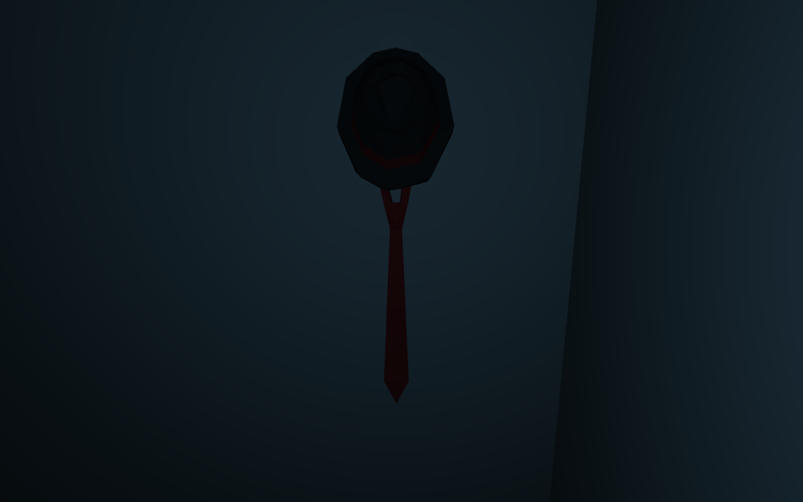
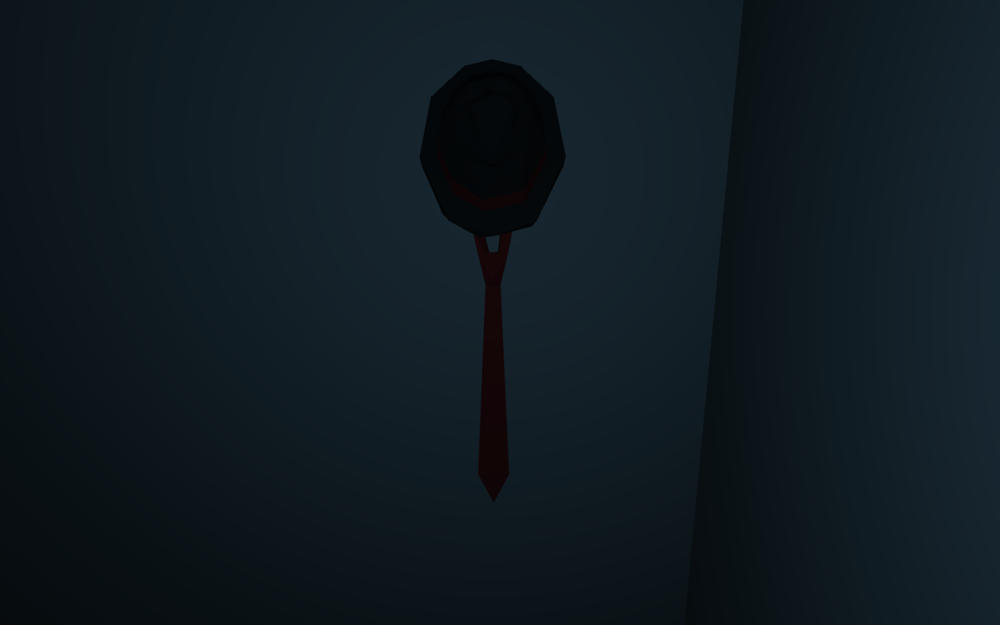
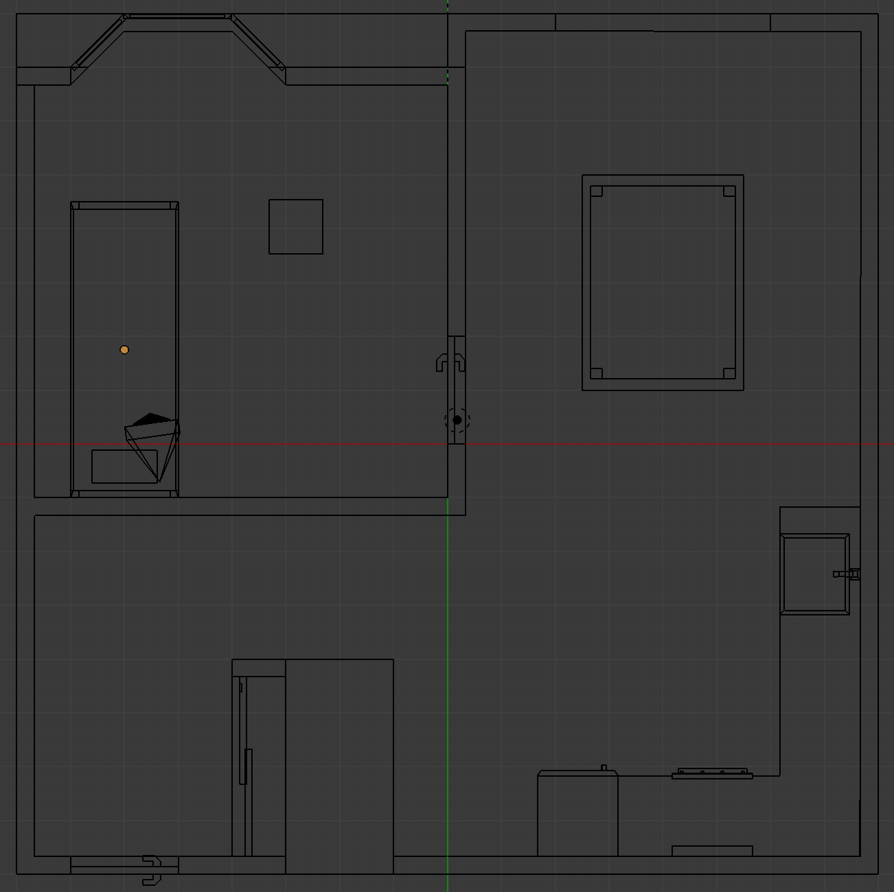
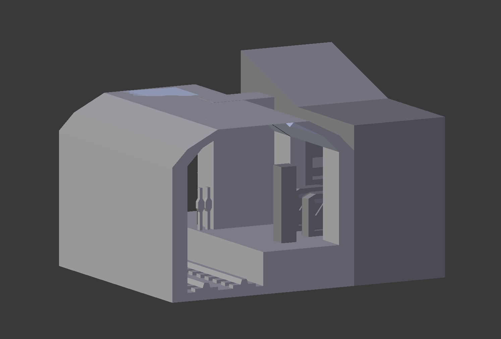
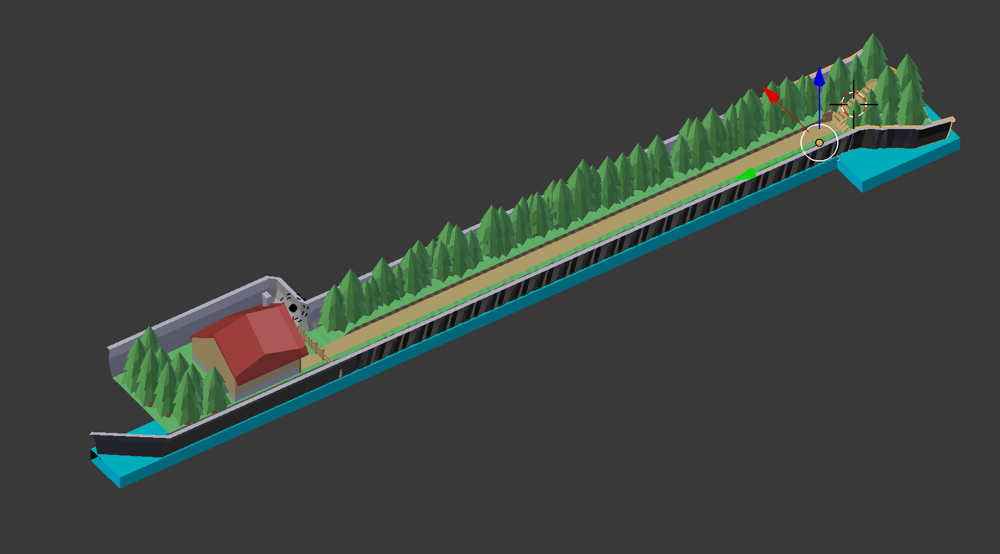
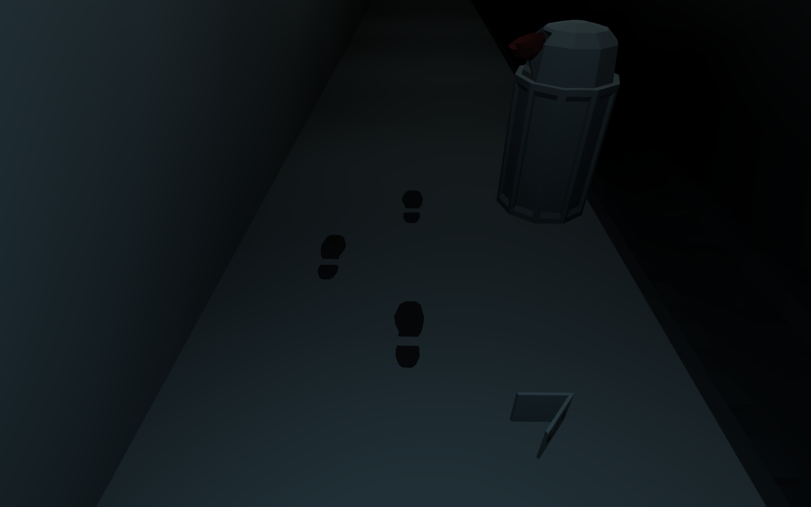
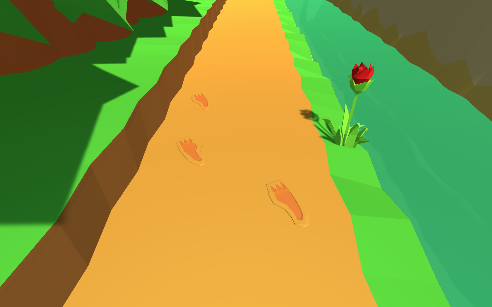
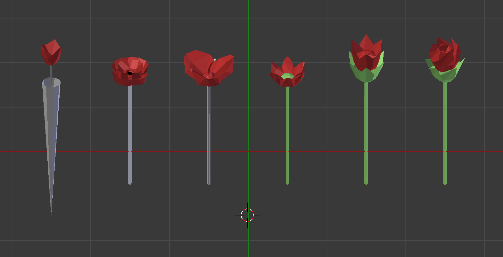

The goal of this project is to take one narrative and create two very distinct worlds. Each of these two worlds encompass the single narrative without actively altering it in any way, in order to see the effects on perception. The placement of the things within the world stays relatively the same; however, objects within the world may be in one world may be replaced with different objects that are mechanically similar in the other world to keep with the theme.
The story itself is an adaptation of the fairy tale Little Red Riding Hood, with the game world separated into locations based upon the story. Little Red leaves her home to deliver some treats to her grandmother. She encounters a wolf who later eats both her and her grandmother but is subsequently saved by a woodcutter. This tale is fairly well known and thus should be easily recognizable; however, take this story and place it into another genre and one might wonder the effects. The genres for the two worlds I have created are fantasy and film noir, chosen due to the stark contrast in their use of colour and lighting, as well as the differences in thematic storytelling. The main stylistic motifs of the film noir genre are monochromatic colour palette, a strong use of lighting and shadows, and a plethora of story tropes like the antihero protagonist, the femme fatale, and themes of revenge and betrayal with a sad or morally ambiguous ending. On the other hand, fantasy is often quite colourful. Their protagonist frequently follows the hero’s journey which climactically ends in with a happy ending of good triumphing over evil and a lesson to be learned. Using this contrast of film noir tending to be dark and gritty over fantasy, whereupon adventures of fantastical proportions tend to exist, I can better explore the interpretation of each adaptation of the Little Red Riding Hood.
 

The game contains a total of three levels, with a variation for each world, totaling six locations. Each of the locations were based upon the settings that appear in the Little Red Riding Hood. The first level is titled the Home. This location serves as the beginning point of the players adventure. Spawning within a bedroom like area, the player explores the location and finds a note alongside an item which details their objective within the game. After which the player will be moved to the second location, given the moniker the Path. On the Path, the player explores the location and at this point is encouraged to explore the location to learn more about the situation that they have been placed in. Once they reach the end of the path, they reach the Conclusion. The Conclusion is not a playable section, rather it is a few cutscenes that wrap up the story and send them back to the beginning. The cutscene that is shown is determined by the actions the player takes during their exploration of the path level.

The first location, which I named the Home, is where the player begins their adventure. When ideating the layout of the setting, I took a look at blueprints of modern apartment buildings as well as typical fantasy and fairy tale hovel layouts and decided that the main rooms required for this would be a larger living space that potentially contains a kitchen and living room, a small entryway, and lastly a smaller room that could serve as a bedroom and the location for the player to begin. Within Little Red Riding Hood, this location would be Red’s house and since the fantasy version of the story is closely based upon the tale, the location is the same. Stylistically, the world drew similarities to medieval fantasy with inspirations from the home of Disney’s Snow White and the Seven Dwarves. The world itself exhibits technology from an era around that of the middle ages, like a large stone oven in the kitchen. As for the film noir variation of the scene, I reinterpreted that medieval tech to a slightly more modern age of the early 1900s that the film noir genre generally takes place in. Taking a look at film noir lighting tropes, I used shuttered windows to block light and create long shadows to fill the room. The other purpose of this initial room is to contain the object that initiates the story and gives the player a goal. The object of choice, a picnic basket in the fantasy end and a briefcase as a noir counterpart, can be collected by the player. Upon collection, gives the player a note that introduces an objective while also giving a little context for the story. Once the object has been collected, the player can move through the door to the next area. Objects that can be collected are highlighted when the player looks at them as a way to indicate possible interaction.
After clearing the previous area, the player is moved to the Path. Of the three levels of the game, the second area’s primary purpose was to be a long path for the player to explore and complete objectives. For the layout of this segment, I decided to make the playable space very narrow. On one side the player is blocked by a wall and on the other, a trench of sorts that is equally impassable and mechanically also acts as a wall. In terms of designing the 3D model of the location, I decided that each location would be modeled in such a way that the center is modular and thus can be repeated to create any length. After that, the path can be capped with a front and end piece that can act as the start and end point.
The first concept was an underground train station. Taking notes from noir film, this kind of location is often frequented as a meeting place of sorts and also serves as a way to tell the player that they have been traveling. The trench to the left was made into a railway and the pathway became the station platform. The feeling behind this setting that I was aiming for was more of a cold and uncomfortable vibe. To create that in this build, I focused on artificial man-made structures and lighting. For the lighting I chose to make this scene on the darker end drawing from the idea that a lower brightness is correlated to fear. I chose to light the scene in a way to mimic fluorescent lighting with a mixture of white and blue light. This creates a cold aesthetic and combining it with the aspect of fear, forms the feeling of discomfort. Again, this scene uses colour sparingly and follows a mostly monochromatic palette barring specific objects that need to stand out.

On the other hand, the second scene is a much more natural setting. The setting is a valley with a small river in the trench and some natural elements open to the sky. This openness creates an illusion of a lack of restriction that contrasts the claustrophobic confines of the previous train station, even though both locations have the exact same amount of playable space. This world has a much larger colour variance compared to the mostly monochromatic station and the lighting draws towards warm colours to emphasize the idea of comfort. The player is surrounded by nature and as a result a large swath of green. There is a noticeable contrast compared to the last world with a comparison of the artificial vs natural. In terms of lighting, the scene is lit in a golden orange glow like a morning sunrise. In this situation, the light creates a sense of warmth for the player resulting in the feeling of comfort.
Both of these locations have little clues and tidbits of environmental information that pertain to the story of the piece. It was difficult to draw parallels between the two worlds. In the Little Red Riding Hood, the primary antagonist, the wolf, has traversed this path before. As a result, the fantasy world path is littered with wolf prints and various wolf markings warning Red of the wolf’s presence. On side B, the subway station lacks an obvious antagonist. Thus, the station shows signs of having been a scene of a crime, with bullet casings and police evidence markers scattered along the platform. Among these environmental tells, are a series of collectable flowers that exist in both worlds and play a large role in determining the conclusion.
  The conclusion consists of a series of still images and text that combine together to create little concluding cutscenes that serve as the end of the piece and once they have ended, the game restarts itself. While my initial concept was to not have cutscenes of any sort, creating a proper ending to the piece without the cutscenes served to be a challenge. There ended up being two endings, one being “good” and the other being “bad”, and another two endings in the other world totaling four different endings. Basing my fantasy endings from the research on the many variations of the Little Red Riding Hood tale, for the “bad” fantasy ending follows the well-known plot line where Red discovers the wolf in her grandmothers bed, who subsequently eats her. In the “good” version, Red makes it to her grandmother’s home before the wolf does and thus, no one is eaten. Taking inspiration from the idea of how the wolf is disguised as the grandmother and the typical tropes that perpetuate themselves in the noir genre, I considered the parallel for the noir world and made the femme fatale both the grandmother of the “good” ending and the wolf after she betrays the main character in the “bad” ending.
The different endings are determined by whether or not the player collects any of the roses that are littered across the Path as well as which world variation the player is in when they reach the conclusion. Naturally, whichever version of the world the player ends the game in will give them the corresponding thematic ending. The collection of the flowers determines if the player will get the “good” or “bad” ending. The inspiration behind the flowers is again based on the Little Red Riding Hood tale where the wolf distracts Red by telling her to go collect flowers and goes off to eat her grandmother. While the aspect of the wolf distracting Red is not in this game, the intent behind it remains the same, if the player wastes time collecting flowers they will get the bad ending. The flowers were coloured red due to large amount of meaning behind the colour theory of red. Red is an intense colour that is often associated with love, which emphasizes Red Riding Hood’s reason for collecting the flowers, yet at the same time is a colour often used as a warning of danger, nodding to the wolf of the story.